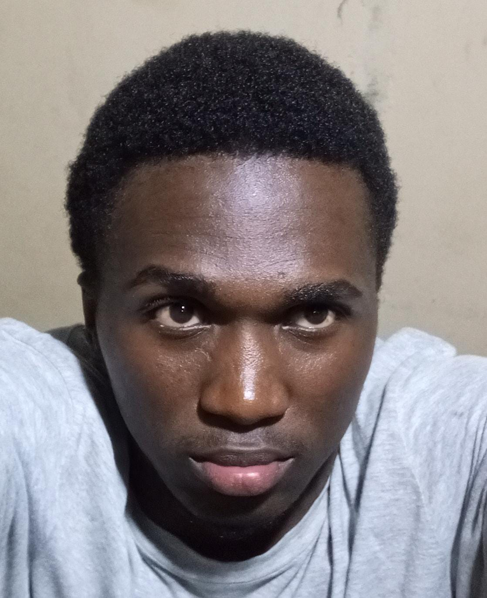

Dominic Isaboke
Kenyan photographer and Information Science & Technology student based in Mombasa and Kisii.
I was born on 23 March 2005. I photograph portraits, live events and brand stories, bringing together technical precision and creative composition to capture meaningful moments.
- Course
- Bachelor of Science in Information Science & Technology (BSc. Information Science & Technology)
- Institution
- Kisii University
- Nationality
- Kenyan
- Profession
- Self-employed freelance photographer since 2022
Background and education
I attended St. Mary's Boys Boarding Primary School and Maseno School. At Kisii University, I lead technology group projects. I also volunteer by providing media coverage for community events.
My photography work includes planning and shooting portraits, events and commercial brand content, editing images, managing client image libraries, and delivering finished galleries on deadline.
My aspirations
In the short term, I hope to open a dedicated photo studio with an automated media-asset workflow. In the long term, I aim to launch a full-service creative media agency in East Africa that combines visual storytelling with digital systems.